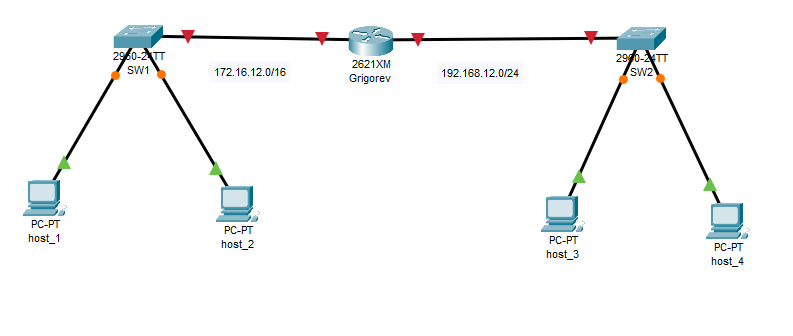
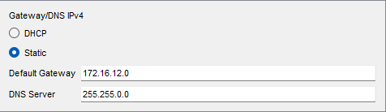
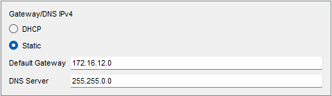
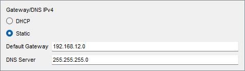

Топология сети
На рисунке представлена топология сети, где:
- 2621XM - роутер (настроен с фамилией Григорьев)
- SW1, SW2 - коммутаторы
- host_1-host_4 - рабочие станции
IP-адресация
Третий октет в IPv4-адресах соответствует номеру в списке группы (12):
| Устройство | IP-адрес | Маска подсети |
|---|---|---|
| SW1 | 172.16.12.0 | 255.255.0.0 |
| SW2 | 192.168.12.0 | 255.255.255.0 |
| host_1 | 172.16.12.0 | 255.255.0.0 |
| host_2 | 172.16.12.0 | 255.255.0.0 |
| host_3 | 192.168.12.0 | 255.255.255.0 |
| host_4 | 192.168.12.0 | 255.255.255.0 |
Скриншоты



Выводы
В ходе лабораторной работы были выполнены следующие задачи:
- Настроена сетевая топология в Packet Tracer
- Произведена настройка IP-адресов на устройствах
- Проверена связность между устройствами
- Экспортированы конфигурации устройств
В результате все устройства успешно взаимодействуют в сети.